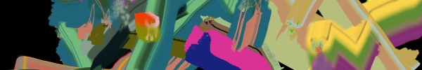
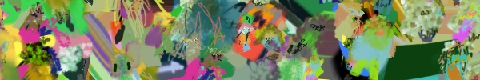
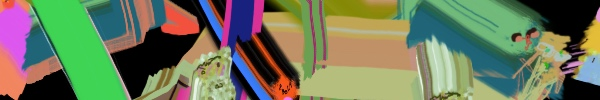
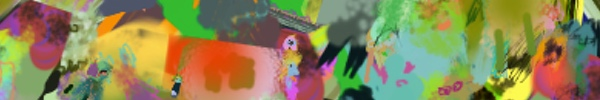
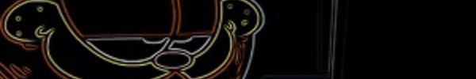

Opaque Media: A Workshop
UC Irvine HG1010
9am - 7pm (also Saturday)
FREE
We have twenty-two presenters over two days, representing sixteen universities, and ten disciplinary backgrounds across the human, social, and information sciences. Topics include Grey and Opaque Is the New Translucence: Is It Frosted or Stained Glass?, Archiving Air, Environmental Health Governance, and the Depositivist Style, Environmental Violence and the Management of Harm, Tremendo Paquete: Media Circulations of & within Cuban Imaginaries, Gaslighting, Settler Colonialism, and Data Justice, The Boring Document: Semiosis, Abduction, and Affective Effects... LINK
A World Redrawn: Eisenstein and Brecht in Hollywood
The Velaslavasay Panorama
7:30pm / Presentation 8 / Films 8:30pm
$13/15
In 1930, Soviet filmmaker Sergei Eisenstein spent six months in Los Angeles under contract with Paramount. A decade later German playwright and theater director Bertolt Brecht, a refugee from Nazi Germany, lived there from 1941 to 1947. Both set out to make films in Hollywood on their own terms. Working in the world's most famous factory of dreams, they believed that artists must call into question the way we understand our world. In A World Redrawn - a project that encompassed an exhibition, a book and three films - Zoe Beloff explores their unrealized film scenarios "Glass House" and "A Model Family in a Model Home” and reimagines them for today. TWO MARXISTS IN HOLLYWOOD - 26 minutes HD video, sound (2015) Interviews with Eisenstein and Brecht in contemporary Los Angeles. (Filmed in part at the Velaslavasay Panorama) GLASS HOUSE - 22 minutes HD video, sound (2014) A film based on Eisenstein’s scenario for a science fiction movie about a world of total visibility that also involves a ruthless robot. A MODEL FAMILY IN A MODEL HOME - 22 minutes HD video sound (2015) This film is inspired by Brecht’s notes for a movie based on an article in Life Magazine, a farm family win a week's stay in a model home and everything goes wrong.
LINK
Moony Habits & VSSL w/ Ron Morelli, An-i and Elena Colombi
TBA
11pm - 6am
$10/$15/$20/$25
(Editor's note: industrial, dark, techno.) Moony Habits & VSSL are teaming up for a late one... Ron Morelli official <L.I.E.S. Records, Hospital Productions // Paris> An-i
LINK

Quiet Mornings: Art x Mindfulness at MOCA
MOCA
9:30am - 11:30am
$Admission
Quiet Mornings is a one-of-a-kind event, pairing a guided meditation exercise with the opportunity to experience a truly unique, immersive artwork. Enjoy The Theater of Disappearance, Adrián Villar Rojas' powerful site-specific work, and a group meditation session led by Mariana Orkenyi. Mariana Orkenyi is a Certified Meditation Teacher and studied Mindfulness at UCLA.
LINK
Brunch Service (Drag Brunch) with Guest Host Vicky Vox
The Abbey Food and Bar
1pm - 4pm
$DINNER
Performances by: TYRA SANCHEZ from Rupaul's Drag Race SONIQUE from Rupaul's Drag Race Barbie's Addiction Calypso Jete Echo. Reserve your table today: Abbey@theabbeyweho.com. Bottomless Mimosas with an entree!*
LINK
Glitch City Arcade Fundraiser
Glitch City
8pm - 11:59pm
FREE
Glitch is holding our fundraiser arcade and we'd love you to come join us! Come meet us, meet friends and our wonderful community! Check out our projects! ☑ New releases ☑ Classic games ☑ Unreleased experiments ☑ Art + Zines ☑ Virtual Reality • The event is free, but there will be plenty of opportunities to donate! • Exclusive raffle prizes, pins, zines, art, stickers, steam keys to top up your steam library, and ... yes, MORE! • Feel free to bring snacks/drinks, we'll be providing refreshments too! We don't do this kind of thing very often! So come support our creative projects and help us do more events at Glitch City -- we need your help with the rent, bills, and improvements to keep the space alive and vibrant! We're across the street from the Culver City expo stop.
LINK

An Artists Swap Meet
ODD ARK
11am - 4pm
FREE
What is it? A happening, exhibition, sale, community gathering, cultural exchange and an opportunity to recycle and reduce our environmental footprint. Participants: artists, artist collectives, artists run spaces, art publications. >>> OVER 40 PARTICIPANTS with the work of over 100 artists presented! Exhibition and sale of: original works editions, special projects art catalogs and art magazines, “failed” works art supplies and tools, studio furniture studio bric-a-brac
LINK
Metro Art Presents: The North Patio #1 Mary Lattimore
Union Station
2pm - 4pm
FREE
This spring Metro Art Los Angeles is pleased to present North Patio, a music performance series over the course of three Sunday afternoons inspired by and taking place on the North Patio, one of Union Station’s most intimate, verdant courtyard spaces that was originally designed as an outdoor waiting room in 1939. This performance features LA Harpist Mary Lattimore. Lattimore has released two solo albums on Ghostly International Records, “The Withdrawing Room,” in 2013 and “At The Dam” in 2016. She has collaborated with notable artists including Kurt Vile, Thurston Moore, Sharon Van Etten, Meg Baird, Steve Gunn, the Clientele, Hop Along, Jarvis Cocker, Karen Elson, Ed Askew, Quilt and Jeff Ziegler.
LINK
LISTENING PARTY 27 and Open Studios
Society For The Activation of Social Space Through Art and Sound (SASSAS)
4pm - LATE
$15/20
Performances by Wiliiam Basinski, Solid Eye. Additional sounds: Lauren Halsey and def.sound. Our neighbors and artists Cindy Bernard and Steve Gavenas are opening their studios, and local gallery Roger's Office is holding special Sunday hours for their exhibition of Hannah Boone and Anna Wittenberg. Admission includes beer.
LINK

ARTSTUFF.WTF is a minimal website listing page for selected mostly DIY art (and etc) events going on around Los Angeles. It is a personal list of 5 - 10 events sent out to friends weekly, and made available online here for bookmarking and quick reference. There is an archive of past listings. Sign up to receive weekly emails. Made by Lee Tusman.
